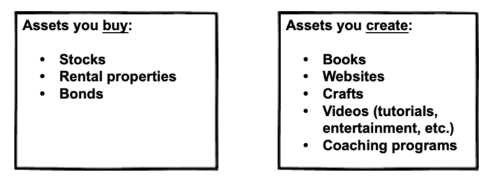

Financial freedom · Part 3
Chapter 10: Create assets

Have fun—and make money along the way
The common mantra goes like this:
-
Get a job.
-
Save money.
-
Buy assets.
This will work.
But there's a better way. Keep reading, or click a link below to skip ahead.
Buying vs. creating assets
Buying assets
Buying assets—such as stocks, bonds, real estate and businesses—requires upfront capital. And that takes time.
As we learned in this article, you can pull roughly 4% of your investment portfolio indefinitely.
So, in order to earn $1,000 a month, you'll need $300,000 invested.
$300k * .04 = $12,000 a year (or $1,000/month).
Admittedly, that's a lot of money. Most people don't have $300k just lying around; it will likely take years—maybe even decades—to save that up. Which begs the question...
Is it easier for you to save $300,000, or create an asset that makes $1,000 a month?
Because, all things being equal, they're the same thing. So focus on whichever is easier for you.
Of course, you can do both, too. If you can buy assets while also building your own assets, well, you're in the cat-bird seat.
Creating assets
Creating assets, on the other hand, has limited downside (assuming you don't risk your life savings on a bad business idea) and high upside. This is called an asymmetric bet.
Here's an example: years ago, I created a travel website. Each day—while I worked at my day-job—I would manage to crank out a few pages of content for the travel website. I put some old-school Google Ads (which are called AdSense) on the site and... voila... it started making $1/day.
I realize $1/day ain't big-time, but it's important to realize (i) I had no idea what I was doing, and (ii) that website continued to make a dollar a day for years to come—without me lifting a finger.
And once I moved on to the second site, it too continued to produce a small passive income stream.
And then the third... and fourth... and... you get the picture.
That's the power of creating assets.
Examples of assets you can create
-
Books
-
Websites
-
Crafts
-
Videos (tutorials, entertainment, etc.)
-
Coaching programs (especially if you outsource the coaching)
-
Plus a whole lot more here.
{kind=link}
The best part: You can create any of the above with little to no money.
A proven framework for creating—and validating—profitable assets
The following framework is enough to keep you moving forward without getting bogged down in unnecessary details. Don't worry about getting business cards, or logo design, or any other nonsense. Stay focused, and keep moving forward.
Start with the customer. What are their problems? What keeps them up at night? And, most importantly, how can you help them?
Create services first. Trust me, you don't want to spend the next year of your life working on a product no one cares about. Instead, first offer your solution as a service. You'll learn several important things, including:
-
Will people buy your solution?
-
What are your customers real challenges? (This is often different that what you originally thought.)
-
What do customers like the most about your solution? What do they like the least?
-
Which parts of the service can you remove? Which parts must you improve?
Convert your service into a product. Once you've answered the above questions, create a product that complements or removes your service. Examples include:
-
Online video courses.
-
Paid newsletters. (These can be ongoing, or evergreen. An evergreen newsletter could be a paid course delivered via an email autoresponder.)
-
Paid email courses via an autoresponder is my personal favorite. It's simple, easy-to-implement, and lets you create the course as-you-go while implementing feedback loops.
Scale. (Optional.) Many people want to scale their business. I understand why, and have helped dozens of companies scale over the years.
But when it comes to my own assets, I don't try to scale at all.
Why?
Because scaling is not fun. It involves a whole other set of skills. Skills like paid advertising, hiring, joint ventures, etc.
Can those activities scale a business?
Of course.
Will it make me happier?
No.
As I've mentioned throughout this book, our approach is hedonistic: if it's not profitable and pleasurable, we ain't gonna do it.
Creating assets is important—but experience may be more important
In my above example about creating the travel website, the return was about $1/day in financial terms...
... but in educational terms, the ROI was huge.
I learned:
-
Copywriting
-
Basic HTML
-
Basic web design
-
SEO
-
Link building
-
Keyword research
... and a whole bunch of other stuff. As I continued to build websites, my skills grew sharper. I then used those skill in freelance work, and ultimately consulting.
A brief aside: what frustrates me most about the education system
... is that it teaches us to "pay to learn".
I believe you should "earn while you learn". And that, dear reader, is what this post is all about. If you can get paid to learn, the ROI is massive—even if your project makes chump change.
Earn while you learn, baby.